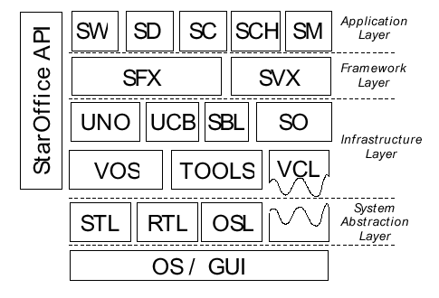

Guide du Hacker OpenOffice.org Non Officiel
Compiler et hacker OpenOffice.org (OOo) vous fera gravir une pente
assez longue. Heureusement, ce document rendra la courbe
d'apprentissage un peu plus raide et abrupte et vous fournira un bâton
de marche pour vous aider.
Ce document assume que vous utilisez un système Linux habituel pour une
économie de temps. Les vrais hackers utilisent des logiciels Libres et n'ont pas le temps
de s'intéresser à du matériel non Libre.
Nous avons pour but de répondre au moins aux questions suivantes :
- Comment je compile OOo ?
- Comment je viens à bout d'itération de développement
- Comment je le débuggue
- Comment j'envois un patch
Si vous avez besoin d'aide pour la compilation de OOo et que vous avez
l'intention de le hacker, merci rejoindre la liste ici et d'y poser vos
questions.
O. Contenu
Ce processus est discuté en bien plus amples détails dans le guide détaillé
de compilation. Nous avons cependant travaillé dur pour rendre ce
process réalisable pour les simples programmeurs mortels, et une simple
description de ce qui suit.
1. Obtenir OOo
Il
y a un tas de versions compétitives d'OOo et plusieurs choix de
branches, ainsi que de multiples sets de patches. Je vous recommande de
compiler à partir de snapshots CVS, qui sont connues pour compiler et
dont les sets de patchs sont connus pour s'appliquer. Ainsi pour avoir
les sources faites :
export CVSROOT=':pserver:anonymous@anoncvs.gnome.org:/cvs/gnome'
cvs login
cvs -z3 checkout -P ooo-build
Cela vous fournira un copie de la branche ooo-build. Si CVS vous fait
peur, vous devriez obtenir une version récente packagée à partir d'ici.
Note : Vous allez devoir
télécharger environ 200 Mo de sources compressées et avoir ~5Go
d'espace pour la dépackager et la compiler.
2. Compiler OOo
2.1 configure
Le processus de compilation est plutôt compliqué, vous avez maintenant
le choix des commandes suivantes et même en les exécutant toutes les
deux, cela ne
posera pas de problèmes.
./autogen.sh # the CVS version
./configure # the packaged version
Ceci va déterminer quelle branche de snapshot vous voulez compiler ; si
vous avez une autre idée, utilisez l'option --with-tag, par exemple :
--with-tag=OOO_1_1_0
pour une branche en cours.
2.2 téléchargement
Avec un certain temps, vous avez mis à jour votre système à un point où
il a
tous les packages dont vous avez besoin pour commencer la compilation
de OOo (mozilla, libart récent etc. etc.) vous en être rendu au point
où vous pouvez télécharger les sources. Pour faire cela, après un
configure réussit, tapez simplement :
./download
et attendez.
make
C'est le bit taxant - tapez
make
et n'oubliez pas de presser entré. Il est fort possible que vous
souhaitiez une sortie des logs, alors pourquoi pas
make 2>&1 | tee /tmp/log
3. Installer OOo
Le résultat d'une compilation parfaite est un set d'installation zippé
situé dans
build/$TAG/instsetoo/unxlngi4.pro/01/normal/
ou similiaire. Puis exécutez le programme setup à partir de là pour
l'installation, exemple :
/opt/OOInstall
pour installer. Il est possible que pour faire cela, vous deviez
d'abord effacer votre fichier
~/.sversionrc
L'ayant installée, vous avez envie de la hacker en liant votre tronc
compilée directement à l'image installée, ainsi en recompilant un sous
répertoire source, vous pouvez simplement réexécuter OOo. Cela peut
rendre votre version/cycle de test indisponible pendant plusieurs
dizaine de minutes. Pour faire cela faites :
bin/linkoo /opt/OOInstall /opt/ooo-build/build/OOO_1_1_2
NB : voir aussi les limitations linkoo
4. Exécuter OOo
Maintenant positionnez-vous dans :
/opt/OOInstall/program
et faites
source ./env
cela paramétrera votre shell (bash) pour exécuter OOo directement. Puis
simplement
soffice.bin
C'est mieux que d'exécuter soffice, ou un script wrapper dans la mesure
où il est très facile d'attacher le débuggueur.
gdb soffice.bin
Note : n'utilisez pas
./soffice.bin
pour d'obscures raisons cela ne marche pas du tout
Note : vous devez
exécuter le ooo-wrapper basé sur OOo avant cela, pour
que ~/.sversionrc soit paramètré correctement d'abord, autrement
exécuter soffice.bin vous enverra dans l'outil de setup du GUI.
Faites juste un
oowriter
avant de commencer
5. Hacker OOo
5.0. Mon premier hack
Bon - nous avons compilé et exécuté OOo et nous voulons nous prouver
qu'il est en fait possible de le hacker. Donc, dans un nouveau
terminal, faites ceci :
cd build/$TAG
. ./LinuxIntelEnv.Set.sh
cd vcl
Maintenant pour faire un hack à vcl/source/window/toolbox2.cxx, je
suggère d'ajouter (par exemple) un
nPos = 0
n'importe où avant le m_aItems.insert dans ToolBox::InsertItem( const
ResId &ResId...) puis sauvegardez
Vous êtes toujours dans vcl/ oui ? alors tapez 'build debu=true';
attendez que le texte défilant s'arrête; (5 secondes ?) maintenant
re-exécutez
soffice -writer
vous devriez voir ce qui arrive
Note : ceci assume que
vous avez soigneusement suivi les étapes précédentes, notamment le linkoo dans la section
3
Note : pour un hacking
quotidien vous préférerez exécuter 'build' à
l'intérieur du tronc source. N'exécutez pas 'make' au niveau
supérieur
ooo-build/
du répertoire ou vous allez (très certainement) effacer toutes les
modifications que vous avez faites et déprimer. Cela vaut le coup de
faire une copie 'out of line' de
build/OOO_1_1_2
quelque part voir ici pour
une aide de relocalisation de la version
5.1 Lire le manuel sympa
Avec le pouvoir de C++ , vous allez pouvoir vous prendre la tête très
facilement (et implicitement) cf Holub, Rules for C and C++
programming, McGraw-Hill, 95
Le meilleur moyen de vous préparer à la bataille est de lire le guide
du codage OpenOffice.org ici et
pour ceux qui se perdent facilement c'tor/d'tor est le raccourci de
constructor / destructor.
5.2 Soumettre un patch
Il est rarement clair de savoir dans quel module réside un patch dans
bugzilla. Un moyen rapide de s'y retrouver est de faire :
cvs status <somefile> | head
Cela devrait donner une ligne 'Repository Revision:' avec un
chemin, le second fragment est le nom du projet.
5.3 Hacker l'installeur
Dans la mesure où l'image de l'installeur détruit l'image (exécutable)
temporaire de setup dans /tmp/sv001.tmp, vous devez
l'empêcher de le faire. Exécutez setup / install avec l'option
-dontdeletetemp.
5.4 Hacker d'autres parties
Ayant une installation qui fonctionne, la meilleure façon de lui
ajouter
vos hacks est de mettre un lien symbolique de program/libfoo641li.so
à la build que vous venez juste de construire le plus sûrement vers foo/unxlngi4.pro/lib/
, puis de redémarrer la suite et vos changements devraient être
incorporés
Par exemple, disons que vous voulez : 'sal' le System Abstraction Layer
et vous avez installé OOO_STABLE_1 dans /opt/OOInstall, vous
devez faire :
cd /opt/OOInstall/program
mkdir backup
mv libsal.so.3.0.1 backup
ln -s /opt/OpenOffice/OOO_STABLE_1/sal/unxlngi4.pro/lib/libsal.so.3.0.1 .
5.5 Comprendre D'make (man)
Alors que le système de compilation est similaire à beaucoup d'autres
systèmes, il est en même temps légèrement différent. La vue d'ensemble
est que chaque module est compilé,
et qu'ensuite le résultat est délivré
dans le solver.
Chaque module est compilé en fonction de l'entête dans le solver.
Ainsi, il y a quelques intrications :
- build : ce script perl solenv/bin/build.pl est
utilisé en conjonction avec prj/build.lst
pour s'assurer que chaque
module qui est nécessaire est compilé en premier. La compilation
détourne les dépendances interne des modules et compile chaque module
avec une paire chdir, dmake.
- deliver : ce script perl solenv/bin/deliver.pl
installe les entêtes, et les librairies (etc.) dans le solver comme
l'en informe prj/d.lst. De façon crucial, cela
permet de s'assurer que
la date de chacun des fichiers qui sont installés dans le solver est la
même
que celle dans le répertoire du module. Cela permet de s'assurer qu'il
n'y a pas, (particulièrement pour les entêtes) de dépendances en
cascade déclenchant des recompilations dans les autres modules.
5.5.1 Répertoires standards
Il y a plusieurs répertoires standards et fichiers dans la plupart des
modules qui constituent OO.o, en voici quelques-uns des plus utiles.
- prj
- build.lst : cela liste les répertoires qui
doivent être faites, les commentaires '^#'sont permis, l'ordre de
cette liste est sans importance voir les détails,
il est dicté par les
opérations de 'builds'
- d.lst : ce fichier décrit le processus deliver, voir les détails
- util :
typiquement, le répertoire util est chargé en agrégeant ensemble les
sous-répertoires pour chaque sous-module dans une seule grande
librairie, ajoutant des dépendances de librairies system, compilant les
fichiers ressours pour le GUI, etc. Tout le travail est décrit dans makefile.mk, c'est en général le
dernier répertoire construit dans un projet.
- inc : les
entêtes
publiques sont typiquement séparées dans un répertoire 'inc', cela les
installera dans le solver par la phase 'deliver' (en utilisant prj/d.lst)
Il y a également plusieurs types de fichiers qui sont (ou ne sont pas)
intéressants :
- makefile.rc : ils
sont tous plus ou moins redondants et peuvent ignorés sans problème
- makefile.mk :
ceux-la au contraire sont le fichiers 'dmake' qui sont utilisés pour
compiler chaque répertoire source.
5.5.2
build.lst
Au premier coup d'oeil, build.lst à l'air inquiétant
vc vcl : nas freetype psprint rsc sot ucbhelper unotools sysui NULL
vc vcl usr1 - all vc_mkout NULL
vc vcl\source\unotypes nmake - all vc_unot NULL
vc vcl\source\glyphs nmake - all vc_glyphs vc_unot NULL
aussi nous devons essayer de décortiquer ce qui se passe ici, qui n'est
en fait pas si bizarre qu'il n'y paraît au premier coup d'oeil. En
premier, les listes sont terminées par le string 'NULL'. Chaque ligne
est préfixée par un raccourci qui est significatif.
Ainsi pour le cas de vcl, nous voyons que vcl\source\unotypes
(vc_unot) doit être compilé avant vcl\source\glyphs
(vc_glyphs) C'est important de
comprendre que l'ordre de la liste est ~
sans importance, et qu'à la place d'une simple liste ordonnée, nous
avons un système de dépendances internes plus complexe : cela contraste
avec la plupart des autres sytèmes make.
Il y a également de la documentation ici à ce sujet.
5.5.3 d.lst
La syntaxe de d.lst est plus facile à comprendre que celle de
build.lst, il ommet des actions par défaut comme copier build.lst dans inc/<module>/build.lst.
Une ligne de la forme :
[action]: [arguments]
mkdir: %_DEST%\inc%_EXT%\external
où si '[action]' est ommis, l'action 'copy' sera prise par défaut. Les
actions typiques sont copy, mkdir, touch, hedabu,
dos and linklib
L'action 'hedabu' est particulièrement intéressante, dans la mesure où
il reformate cosmétiquement les entêtes pour les faire rétrécir pendant
l'installation (sinon, elle ressemble beaucoup à l'action copy)
Pendant l'action, des variables de macros diverses sont étendues,
quelques-unes sont :
- %__SRC% — nom du répertoire de la distribution ex. unxlngi4.pro
- %_DEST% — chemin absolue du solver ex. /opt/OpenOffice/OOO_STABLE_1/solver/641/unxlngi4.pro
- %_EXT% — chemin (inusuel) pour avoir un update mineur
ex.
641.1, typically used to version every base sub-directory.
Typiquement cependant, si vraiment vous avez besoin d'ajouter une
règle (cf copies implicites de répertoire), elle sera de la forme
..\%__SRC%\inc\sal\*.h %_DEST%\inc%_EXT%\sal\*.h
NB : les chemins relatifs sont relatifs au répertoire 'prj/'
5.6 Itérations rapides
Il existe plusieurs manières de venir à bout des itérations de
développement, le meilleur moyen est d'utiliser linkoo pour lier
symboliquement la librairie de l'install set directement dans votre
tronc compilé. Ainsi vous pouvez simplement recompiler un sous
répertoire, ex .
vcl
en exécutant
build
et en réexécutant soffice.bin
5.7 Puis-je avoir un char *,
s'il vous plaît ?
OOo contient à peine 6 strings de wrappers, aussi les implémentations C
présentent peu d'intérêt
rtl_String : sal/inc/rtl/string.h
string 'Normal' plus une référence de comptage rtlstring->buffer
est utile, comme l'est rtlstring->length . Ce
string a déjà été converti dans un set de caractère particulier, voir
sal/inc/rtl/textenc.h : les seuls cas intéressants sont RTL_TEXTENCODING_UTF8
et peut-être RTL_TEXTENCODING_ASCII_US pour de vrai ( ?).
N'hésitez pas à traiter rtlstring->buffer comme
votre char * préféré.OString : sal/inc/rtl/string.hxx
Un simple rtl_String ostring.pData pour
avoir un rtl_String (c'est public) . OString a des
méthodes raisonnablement utiles si vous en avez besoin.rtl_uString : sal/inc/rtl/ustring.h
string 'Normal' Unicode similaire à rtl_String et référence de
comptage aussi bien. Cependant celui-ci vient toujours avec un encodage
UCS-2, sans doute pour être compatible avec des choix Java douteux.OUString : sal/inc/rtl/ustring.hxx
un rtl_uString enveloppé dans une classe. C'est ce qu'utilise la
plupart du code OOo pour passer les stringsString : tools/inc/string.hxx
C'est une classe de string obsolète, aliasée à 'UniString'. Elle a un
certain nombre de limitations comme An rtl_uString enveloppé à
l'intérieur d'une classe. C'est ce qu'utilise la plupart du code OOo
pour passer les strings
Dans la mesure où un homme réel utilise des strings char * encodés
en UTF-8, pour utiliser n'importe quel système d'API comme 'printf'
vous devez extraire un char * de OUString,
utilisez ceci :
static char *
gimme_utf8_please (const rtl::OUString &oustring)
{
rtl::OString ostring;
ostring = ::rtl::OUStringToOString (oustring, RTL_TEXTENCODING_UTF8);
return strdup (ostring.pData->buffer);
}
et l'inverse :
static rtl::OUString
complicate_things_into_ucs2_please (const char *utf8_string)
{
rtl::OString ostring;
ostring = rtl::OString (utf8_string);
return rtl::OStringToOUString (ostring, RTL_TEXTENCODING_UTF8);
}
Si vous souhaitez juste imprimer un string pour des besoins de
debuggage, vous voudrez sans doute lire ceci .
5.7.2
Examiner les strings de GDB
Nous avons déjà vu que OOo n'utilise pas les strings char *
modestes. Si vous pensez que c'est assez compliqué quand vous écrivez
du
code, attendez d'avoir à le débugguer. Voilà comment avoir vos strings
de gdb/dbx qui n'utilisent pas nativement unicode.
Alternativement, si ce support n'est pas encore dans votre version OOo
alors...
- rtl_String : met le doigt dessus
- String : note : la décl' de cela utilise la macro
'UniString' pour embrouiller les lecteurs. Heureusement, par
programmation, nous pouvons passer un String à un OUString de façon
transparente.
- OString : p str->pData
OUString, rtl_uString (un super truc de Kevin Hendricks) la
façon la plus rapide et la plus simple de débarasser d'un string est de
faire :
p *theString; # grab the length (2nd field)
x/<length>s theString->buffer
ex pour un string de 20 caractères, nous voulons
x/20s theString->buffer
cela devrait imprimer le string comme une collection
restreinte avec la valeur ASCII des caractères gentiment disposée dans
une colonne. Pour imprimer, de façon programmée un OUString (ou String)
vous avez besoin
::rtl::OString tmpStr = OUStringToOString (MyOUString, RTL_TEXTENCODING_UTF8);
fprintf (stderr, "String is '%s'\n", tmpStr.getStr());
5.8
Limitations linkoo
Bien que trés puissant, linkoo a un certain nombre de limitations dues
à la façon dont OOo est assemblé. Il y a deux sortes de problèmes :
- Un comportement bizarre des liens - ie si vous liez
symboliquement une librairie, il suit le lien à l'exécution et finit
dans
la confusion
- soffice.bin - cela doit être copié depuis
desktop/unxlngi4.pro/bin/soffice à chaque fois que vous entrez dans un
cycle de développement, autrement le débuggage est confus,
- libcgmgr2.so - cela doit être copié depuis
configmgr/unxlgni4.pro/lib à chaque fois, sinon la configuration ne
peut être chargée,
- contruction bizarre d'une librairie interne
6. Débugguer OOo
Cette section assume que vous utilisez gdb à partir d'une console
6.1 Compiler avec des symboles
de débuggage
OOo inclus la possibilité d'ajouter du code de débuggage par module,
vial la commande build debug=true dans chaque module.
Malheureusement, ce n'est pas recommandé de l'exécuter pour l'ensemble
du projet, en plus d'inclure des symboles de débuggage vitaux, il
inclut également des tas d'assertions, des warnings et d'autres
vérifications variées.
Ainsi si vous voulez des symboles de débuggage pour tout, vous devez
hacker plusieurs makefiles pour ajouter les symboles de débuggage [NB
cela rendra les binaires de OOo ~1Mo plus petits et la branche
complète de build envrion 8 Go aussi faites y attention] appliquez ce
patch :
--- solenv/inc/unxlngi4.mk
+++ solenv/inc/unxlngi4.mk
@@ -92,18 +92,18 @@ cc=gcc
# do not use standard header search paths
# if installed elsewhere
.IF "$(BUILD_SOSL)"!=""
-CFLAGS=
+CFLAGS=-g
.ENDIF
CFLAGS+=-fmessage-length=0 -c $(INCLUDE)
# flags for the C++ Compiler
-CFLAGSCC= -pipe -mcpu=pentiumpro
+CFLAGSCC= -g -pipe -mcpu=pentiumpro
# Flags for enabling exception handling
CFLAGSEXCEPTIONS=-fexceptions -fno-enforce-eh-specs
# Flags for disabling exception handling
CFLAGS_NO_EXCEPTIONS=-fno-exceptions
# -fpermissive should be removed as soon as possible
-CFLAGSCXX= -pipe -mcpu=pentiumpro -fno-for-scope -fpermissive -fno-rtti
+CFLAGSCXX= -g -pipe -mcpu=pentiumpro -fno-for-scope -fpermissive -fno-rtti
# HACK: enable Hamburg developers to build on glibc-2.2 machines but compile vs. glibc-2.1 headers
.IF "$(BUILD_SOSL)"==""
Bien sûr, sans les symboles de débuggage gdb devient encore plus
inutile. Pour appliquer le patch copiez et collez la partie ci-dessus
dans /tmp/foo et dans le répertoire de base.
patch -p0 < /tmp/foo
6.2 Positionner des points de
rupture
Dû à un niveau assez élevé de plantages dans gdb, il est à peu près sûr
que positionner des points de ruptures avant l'exécution ne
fonctionnera pas, aussi le meilleur schéma est de
gdb ./soffice
break main
run # don't forget the arguments here
# ... traps in main ...
break osl_readFile
continue
Bien sûr cela ne marchera jamais si le code est implémenté dans un
librairie qui est dlopened plus tard, ce qui arrive pour une vaste
majorité du code de OOo. Aussi vous devez attraper le chargement
du code et alors mettre les points de rupture dedans. Pour faire cela
appliquez un point de rupture dans osl_psz_loadModule et souffrez.
Alternativement si vous pouvez instrumenter le code, c'est plutôt
facile d'ajouter #include <signal.h> et mettez un (SIGSTOP);
quelque part dans le code qui sera attrapé dans le débuggueur.
6.3 Commencer au début
Nous commençons dans 'main' avec un wrapper sal, cela appelle
vcl/source/app/svmain.cxx(SVMain). Cela invoque Main dans
pSVData->mpApp; mais pSVData est un en-ligne local. Pour débugguer
cela utilisez la variable globale pImplSVData, ex :
p pImplSVData->maAppData
Cette méthode 'Main' est typiquement : desktop/source/app/app.cxx (Main)
6.4 Examiner strings
Le char * modeste (que gdb peut afficher nativement) est évité dans le
monde des objets en le wrappant avec différentes classes innombrables
que gdb ne comprend pas. Le pire, dans pas mal de cas
il est extrèmement difficile même d'imprimer le string, une des
conséquences qui a fait que nous avons pris la décision d'utiliser un
encodade ucs-2. Il y a aussi des classes string à la fois variables et
invariables.
Merci de lire la section 5.7.2 pour savoir
comment les strings marchent
dans OOo et pour avoir des indications de débuggage.
6.5 Permettre une compilation
dans le bon ordre
Les dépendances de compilation des modules sont vraiment cruciales pour
obtenir une version propre. Lorsque vous tapez 'build' dans un module,
la compilation examine d'abord prj/build.list, ex neon/prj/build.lst :
xh neon : soltools external expat NULL
cela signifie que 'soltools, 'external' et 'expat' doivent être
compilés et délivrés correctement avant que neon ne puisse être
compilé. Occasionnellement ces règles peuvent être brisées et personne
ne s'en aperçoit avant un moment.
6.6 Cela plante, mais seulement
dans gdb
Vraiment sympa, vous avez lié symboliquement
desktop/unxlngi4.pro/bin/soffice à soffice.bin dans votre tronc
d'install, n'est-ce pas ? Cela marche correctement si vous ne faites
que l'exécuter, mais il semble que gdb défait les liens symbolique
et passe un lien complètement qualifié come argv[0], qui ne
permet pas d'atteindre le binaire dans le chemin, il assigne alors le
chemin du programme de base comme
/opt/OpenOffice/OOO_STABLE_1/desktop/unxlngi4.pro/bin et commence à
rechercher (ex applicat.rdb) dedans. Bien sûr quand il n'arrive pas à
trouver les informations de setup, il plante silencieusement à quelques
kilomètres du problème d'origine.
6.7 Cela plante, mais ne plante
pas
Pour des raisons diverses, les détecteurs de signal sont attrapés et la
vie peut devenir plutôt confuse, ainsi le mieux pour les compileurs est
d'appliquer quelque chose comme ça :
--- sal/osl/unx/signal.c
+++ sal/osl/unx/signal.c
@@ -188,6 +188,8 @@ static sal_Bool InitSignal()
bSetILLHandler = sal_True;
}
+ bSetSEGVHandler = bSetWINCHHandler = bSetILLHandler = bDoHardKill = sal_False;
+
SignalListMutex = osl_createMutex();
act.sa_handler = SignalHandlerFunction;
NB. trailing space
6.8.1 Je ne peux trouver le code
à partir de la trace
Quelques méthodes, décrites pour avoir un liage spécial, comme cette
clé, peuvent être utilisées dans les callbacks ; typiquement elle a un
préfixe 'LinkStub', et cherche ainsi la dernière partie de
l'identifiant dans une recherche de texte libre ex
IMPL_LINK( Window, ImplHandlePaintHdl, void*, EMPTYARG )
compile la méthode 'LinkStubImplHandlePaintHdll'.
6.9 Comment puis-je recompiler
seulement les fichiers que je vois dans
la trace
Souvent lorsque vous exécutez gdb dans une compilation non débugguée,
vous ne pouvez vous permettre d'attendre et recompiler (par exemple)
tout oowriter. Aussi nous avons créé une petite aide perl avec laquelle
vous pouvez couper et coller les noms de methode/classe qui vous
intéressent à partir du stack, et cela touchera juste les fichiers
contenant ces strings pour faciliter une recompilation. Voici un flux
de travail typique de débuggage.
gdb ./soffice.bin
...
bt
#0 0x40b4e0a1 in kill () from /lib/libc.so.6
#1 0x409acfe6 in raise () from /lib/libpthread.so.0
#2 0x447bcdbd in SfxMedium::DownLoad(Link const&) () from ./libsfx641li.so
#3 0x447be151 in SfxMedium::SfxMedium(String const&, unsigned short, unsigned char, SfxFilter const*, SfxItemSet*) ()
from ./libsfx641li.so
#4 0x448339d3 in getCppuType(com::sun::star::uno::Reference const*) () from ./libsfx641li.so
...
quit
cd base/OOO_STABLE_1/sfx2
ootouch SfxMedium
build debug=true
Ainsi tous les fichiers référençant/implémentant quelque chose avec
SfxMedium seront touchés et recompilés avec des symboles de débuggage.
6.10 Comment puis recompiler
tous les fichiers dans un répertoire source
Si vous souhaitez recompiler le code seulement dans vore répertoire
courrant, vous pouvez utiliser la cible killobj dmake pour enlever les
fichiers objets :
dmake killobj
dmake
6.11 Cela plante toujours dans
sal_XErrorHdll
Vous êtes victime d'un rapport d'erreur X asynchrone
export SAL_SYNCHRONIZE=1
rendra le traffic de X syncrhone et rapportera l'erreur par la méthode
qui l'a causé, cela rendra également OOo beaucoup plus lent et le
timing différent.
6.12 Il échoue silencieusement à
charger mez fichiers word
Coalan a suggéré : mettez un point de rupture sur le dessus de
ww8par.cxx et la queue de SwWW8ImplReader::LoadDoc et confirmez
que le document va aussi loin que le fichier d'import.
Un endroit facile et humain pour mettre un point de rupture est
dans SwWW8ImplReader::ReadPlainChars vous pouvez voir des tas de text
au moment ou ils sont lus. Alternativement
SwWW8ImplReader::ReadPlainChars à chaque paragraphe qui est inserré.
6.13 Comment est-ce que
j'utilise une console de débuggage ?
Ainsi OOo contient une importante infrastructure de débuggage, vous
pouvez la voir
ici Malheureusement l'activer n'est pas trivial. Premièrement, rien
n'est compilé dans une compilation de produit, aussi nous devons
recompiler des parties centrales du code OOo comme des compilations
non-produit et nous devons réexécuter linkoo pour lier ces
nouvelles compilations dans notre set.
Tous d'abord, créer un fichier de débuggage d'Environnement, je
l'appelle LinuxIntelEnv.Set.debug
TMPFILE=~/.Env.Set.debug
# Purge .pro bits
sed 's/\.pro//g' LinuxIntelEnv.Set.sh > $TMPFILE
. $TMPFILE
rm $TMPFILE
# Clobber product parts
unset PRODUCT PROSWITCH PROFULLSWITCH
Maintenant faites
source ./LinuxIntelEnv.Set.debug
cela met en place votre environnement pour une build non productive.
cd vcl; build dbgutil=true --all linkoo
Maintenant - exécutez simplement OOo et quand c'est en plein travail,
pressez <Alt><Maj><Ctrl> 'D' dans cet ordre, cela
devrait provoquer l'affichage d'une fenêtre de débuggage. Les options
de débuggage sont sauvés par la suite dans le fichier .dgbsv.init pour
la prochaine exécution, vous pouvez en contrôler l'emplacement avec :
export DBGSV_INIT=$(HOME)/.dbgsv.init
ex : c'est (malheureusement) un fichier binaire
6.14 Debuggage Excel
Interroperabilité
C'est assez facile, editez sc/source/filter/inc/biffdump.hxx,
definissez EXC_INCL_DUMPER à 1 et recompilez 'sc'. Faites aussi une
copie de sc/source/filter/escel/biffrecdumper.ini vers ~. Puis exécutez
et vous devriez avoir un foo.txt avec les données de débuggage à
l'intérieur. Si vous n'obtenez rien, vous devez trouver/appliquer
sc-biffdump.diff à partire d'ici
7. Contribuer des
patches
7.1 Style diff
Utilisez toujours des diffs unifiés 'cvx -z3 diff -u' dans la mesure où
ils sont plus lisibles types de diff (et sensible) qui se lisent
et d'appliquent.
7.2 Quelques interactions
Cela semble une bonne idée de travailler sur la manière la meilleure
pour implémenter votre fix, et/ou d'en discuter avec un ou deux
développeurs avant tout. Une des meilleures façon est de poster sur
dev@openoffice.apache.org (labo@fr.openoffice.org pour le français) ou de
regarder sur IRC irc.freenode.net sur le cannal #OpenOffice.org. IRC
est un moyen de communication vraiment pauvre, mais mieux que pas de
communication du tout. Voir ici pour savoir qui
est qui.
7.3 Création de patch ooo-buidl
Voir ici
pour plus d'informations sur notre infrastructure de patchage
7.4 soumettre un bug
Voir ici pour une
interface saine/hackers pour IssueZilla
d'OpenOffice.org
Dans la mesure où l'on peut toujours connaître le propriétaire d'un
module en vérifiant le tag ADMIN_FILE_ OWNER il y a un petit outil dans
ooo-build : bin/owner<file-name> qui vous aide à
interagir/e-mailer au sujet d'un module donné, c'est mieux d'assigner
ces bugs spécifiques à cette personne.
8 Conseils divers
8.1 Obtenir un accompte OOo CVS
Voici le process pour obtenir un accompte CVS pour le serveur CVS, les
compte ooo-build sont maintenus différemments
Pour connaître comment le processus de soumission d'issue marche, voir
l'issue #7270. Une fois votre compte créé, vous devez ouvrir un tunnel
pour sécuriser le server CVS, quelque chose comme :
ssh -f -2 -P -L 2401:localhost:2401 tunnel@openoffice.org sleep 1400 < /dev/null > /dev/null
Vous devez ensuite changer CVSROOT pour pointer sur votre machine
locale, dans la mesure où c'est le point final du tunnel :
:pserver:mmeeks@localhost:/cvs
Votre nom de compte et mot de passe seront les mêmes que ceux que vous
utilisez pour rentrer des bugs dans le système Source Cast. Logguez
vous et... vous vous apercevrez rapidement que vous devez migrer vos
paramètre CVS sur le serveur, pour faire cela sans perdre de place avec
des checkouts répétés :
bin/re-root /path/to/checkout ":pserver:<account-name-here>@localhost:/cvs"
Bien sûr, pour faire un commit, vous devez avoir des privilèges liés au
projet et vous battre avec la bureaucracie.
8.2 Utiliser patch/diff
Patch/diff sont des outils merveilleux, cependant les gens fournissent
souvent des données qui provoquent la confusion et qu'il est très
difficile de corriger. Voici quelques astuces pour remettre les choses
dans l'ordre
- Si vous n'êtes pas sûr du tout, exécutez les patchs avec
--dry-run d'abord, cela donnera l'apparence de faire l'action de
patcher, mais en fait ne le fera pas [ cela peut donner de faux
résultats avec des inter-dépendances compliquées de patches, mais c'est
très utile]
- Utilisez plus particulièrement le patch -p0, 0 signifie le
nombre d'éléments de patchs à dépouiller depuis de début de chemin de
fichier que le diff pointe.
- Quand cela plante et que vous n'avez que la moitié du patch
qui s'applique et que vous souhaitez revenir à un truc propre, à la
fois supprimez les fichiers et faites un cvs update, ou repatchez avec
l'option '-R' pour annuler l'effet.
- Parfois, utiliser diff entre les modules avec beaucoup de
modification des espaces rend le patch plus difficile à lire, le flag
'-w' de (cvs) diff rend les choses plus faciles.
8.3 Make clean
Utilisez dmake clean dans le répertoire supérieur. Dans les versions
pre HEAD il n'y avait pas de cible 'clean' donc à la place vous devez
faire quelque chose comme (ce que fait dmake clean maintenant)
find -name 'unxlngi4.pro' -exec rm -Rf {} \;
8.4 setup CVS
Pour une utilisation efficace de la largeur de bande passante, générez
des diffs
sensibles par défaut et suivez le cours, vous devez avoir ceci dans
votre ~/.cvsrc.
cvs -z3 -q
diff -upN
update -dP
checkout -P
status -v
8.5 Ajouter des fichiers
d'entêtes à une compilation.
Pour ajouter des entêtes de fichier dans
external/ assurez-vous que vous les listez dans external/prj/d.lst pour
qu'ils soient copiés dans le répertoire
solver/641/unxlngi4.pro/inc/external pendant la compilation.
8.6 Trouver où hacker
Il y a souvent des éléments GUI utilisés près des trucs que vous
essayez de localiser/fixer. Trouvez alors des string suffisemment
inutilisés et recherchez les dans la recherche de texte LXR, cela
devrait revéler un identifiant relatif à ce string ex : SID_AUTOFORMAT
ou FN_NUM_BULLET_ON. Une fois cela obtenu, faites une nouvelle
recherche de texte pour ce string et vous trouverez l'usage [ ou une
définition chainée à quelque chose d'autre]. Par exemple, pour les
menus/barre d'outils la fonctionnalité est habituellement dans une
définition case ex : case SID_AUTOFORMAT:...
9. Liens utiles
9.1 www.openoffice.org
Alors que la structure initiale d'openoffice.org ne semble pas orientée
hackers, il y a beaucoup de documentation
utile si vous la cherchez un peu.
Pour les nouvelles sur OOo et une perspective distincte sur OOo voir ooodocs.org
9.2 Archives de patch
En produisant différentes versions d'OpenOffice.org, différents
projects ont produits des patchs (plutôt nombreux) pour OOo.
Heureusement, ils commencent à être triés à un meilleur rythme, aussi
aucun patch ne doit être nécessaire dans HEAD pour le compiler, de la
même manière beaucoup sont allés dans OOO_STABLE_1. Il peut être utile
de les utiliser tous ou certains néanmoins.
- Ximian OOo patches et
outils de compilation /snpashots sont tous disponibles sous forme de packages ou de patches.
- Les pages
d'aide Debian, avec
des patches. Et aussi le CVS
Debian.
- archive
patch de Mandrake OOo
- patches de portage OOo FreeBSD
- les fichiers specs Red Hat (basés sur ceux de Mandrake)
sont aussi intéressants à lire à partir de leur SRPM.
- les personnes qui veulent localiser OOo devraient étudier
les patches
de Pavel Janik
10 FAQ (non fréquentes)
Comme personne ne m'a jamais demandé cela, I just made them up to
astro-turf a bit (safer, wipe-clean, more durable questions).
10.1 Pourquoi les branches comme
'mws_srx644' ont des nombres bizarre à l'intérieur
En consultant des oracles variés, des entrailles, etc, il transpire
qu'en théorie ces nombres sont incrémentés chaque semaine, ils sont
freezés chaque semaine ainsi que le solver et l'environnement de
développement. Cependant, dans un temps plus récent, le processus de
solidification d'une simple build pour une version plus large a pris
plus lontemps qu'une semaine créant un dilemne et un tag mixé
alphanumériquement. Le mws signifie 'Master Workspace'.
10.2 Pourquoi la build nécessite
Java ?
Essentiellement, il semble qu'il y a beaucoup de fichiers XML impliqués
dans l'enregistrement des composants et d'autres services divers. Il
apparaît qu'utiliser Java est juste une façon aisée de faire simplement
ces manipulations. Aussi Java peut-être utilisé gentiment pendant
l'exécution s'il est sur la machine.
Mais à partir du tag SRC680_m44 il y a un script
python alternatif inclut pour remédier au probleme de process de
ces fichiers XML utilisés pour l'enregistrement, aussi, il est possible
de compiler des versions après cette date sans java, donc votre choix
variera suivant que la compilation par défaut se fait avec java.
10.3 Pourquoi [t]csh est cassé ?
C'est plutôt énigmatique, des cassages particulièrement curieux
semblent venir de la façon de piper les commandes dans stdin de façon
crucialement différente de la façon de les mettre dans tty aussi :
echo 'echo #define DLL_NAME "libsch641li.so" >./foo.hxx' | /bin/tcsh -s
échoue à faire quoi que ce soit alors que taper la même chose dans le
shell fonctionne correctement. Encore plus bizarrement
tcsh -fc 'echo #define DLL_NAME "libsch641li.so" >./foo.hxx'
fait les choses correctement. Voir aussi csh.
10.4.1 Je viens juste d'essayer
de faire un re-locate de la compilation
pourquoi cela ne marche-t-il pas ?
La réponse simple est : vous devez exécuter :
bin/relocate /path/to/new/build
Un réponse plus complexe est :
Bon, en assumant que vous avez re-configuré les choses
(LinuxIntelEnv.Set aura besoin de chemins modifiant aussi et
ré-important dans votre shell) ensuite cela dépend grandement des
chemins non relatifs ambigus, codés dans de nombreux fichiers
générés/compilés, particulièrement les fichiers (dépendant) '.dpc*' .
Essayez :
find -name '*.dpc*' -exec rm {} \;
Le stlport fait vraiment des trucs cassés, vous aurez donc besoin
d'éditer le 'stl_gcc.h' à l'intérieur du solve/ et de replacer les deux
instances de chemins ici (voir inc/stl/config/stl_gcc.h)
10.5 CVS dit 'Fatal error
aborting. [acc] no suche user', pourquoi ?
Bien sûr il est possible que votre nom d'utilisateur ne soit pas
enregistré, souvent, cela signifie simplement que ~/.cvspass a été
perdu et/ou que vous ne vous êtes pas loggués dans cvs, logguez-vous et
répétez la commande.
10.6 Que signifie '.pro' dans
'unxlngi4.pro'
Product, n'est-ce pas
évident ?
10.7 A quoi ressemble vraiment
OpenOffice.org ?
Aujourd'hui, j'ai trouvé une photographie de lui sur mon système, je
l'ai mise ici :

10.8 Comment puis-je prendre une
copie d'écran de OOo ?
OOo fait des choses vraiment étranges avec les ressources X, ainsi des
applications habituels de copie d'écran n'arrive pas à prendre de
photos. ImageMagick 'import' fait cependant un bon travail.
import foo.png
à partir de la console ou
à la place. NB à moins que vous ne vouliez que vous souhaitiez votre
monde tout petit, vous devez afficher des grandes icônes de barre
d'outils d'abord.
10.9 J'essaye de compiler avec
gcc sur un préfixe avec BUILD dedans,
pourquoi cela plante ?
C'est dû à de très sérieux crack fumeux en cours dans stlport.
Essentiellement, il y a des entêtes principales désagréables et
elles veullent être capable de retomber sur les entêtes précédents
(avec le même nom) - ainsi elles ont a coder le chemin en dur. Pour
éviter d'avoir à faire cela dans de multiples endroits, elles utilisent
un #define, le #define a une marcor expansion faite sur lui. Ainsi si
votre préfixe gcc contient un élément qui est une macro, vous êtes fait
:
config de l'entête stlport :
#define _STLP_NATIVE_INCLUDE_PATH \
/home/michael/ximian-desktop/ooo/BUILD/ooo/include/c++/3.2.2
stlport helpful macros:
# define _STLP_MAKE_HEADER(path, header) <path/header>
# define _STLP_NATIVE_CPP_C_HEADER(header) \
_STLP_MAKE_HEADER(_STLP_NATIVE_INCLUDE_PATH,header)
and finally stlport cunning native include:
#include _STLP_NATIVE_CPP_C_HEADER(foo)
Net result:
g++ ... -DBUILD=7663 ...
...
from /home/michael/ximian-desktop/ooo/BUILD/ooo/OOO_1_0_2/xml2cmp/source/xcd/main.cxx:62:
/home/michael/ximian-desktop/ooo/BUILD/ooo/OOO_1_0_2/solver/641/unxlngi4.pro/inc/stl/cstddef:35:46:
/home/michael/ximian-desktop/ooo/7663/ooo/include/c++/3.2.2/cstddef: No such file or directory
10.10 A quoi sret la description
des composants UNO XML ?
Pas grand chose, souvent installé, mais plutôt non utilisés
10.11 Pourquoi le code est si
moche
Les auteurs doivent utiliser un éditeur vraiment étrange. Il pense que
les tabs stops sont toutes les 4 colonnes. Evidemment le fichier
s'affiche mal dans les éditeurs Unix qui savent que le tab sont large
de 4 characteres.
S'il vous arrive d'utiliser a Real Editor, nous
avons des lunettes roses à vous vendre. Collez le contenu de http://ooo.ximian.com/emacs.el
dans votre .emacs ou chargez le avec une ligne comme celle-ci : (load
"/path/to/that/file.el") . N'oubliez pas d'adapter
my-openoffice-path-regexp à vos besoins.
11. Travailler avec nous
Voir le document About
ooo-build
Traduction Sophie Gautier
Retour à l'index Labo
|
{kind=link}